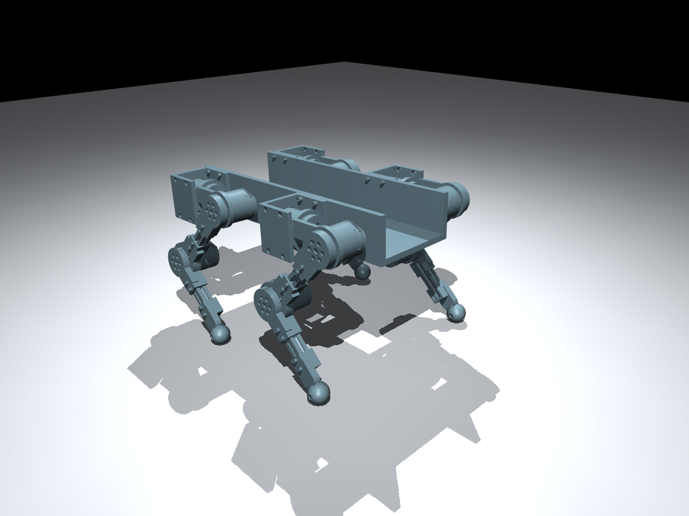

StrideForge
Quadruped design and a first standing simulation
I’m working on StrideForge to learn more about legged robots and simulation. The work so far covers the leg mechanism, a four-legged CAD assembly and a standing test in MuJoCo. The physical robot is still to be built.
I’m keeping a public build journal with the design revisions, images and simulation results.

Leg mechanism
Each leg has three AK45-36 actuators: hip roll, hip pitch and knee. That gives the quadruped 12 actuated joints. The latest revision has separate left and right leg assemblies, with both knees folding rearward.
The thigh and shin each have 160 mm between joint centres. Short 3D-printed end fittings connect to purchased 20 × 20 × 80 mm aluminium profiles using standard fasteners. I’m using vendor-derived motor housings and output parts in FreeCAD to study the mechanism and how the parts fit together.
From CAD to simulation
The current model has URDF and MuJoCo versions with a floating base. Its estimated mass is 8.731 kg. The simulation uses idealised actuators within the documented limits; the motor behaviour will need checking against measurements from a physical unit.
The latest standing test ran for six seconds with all four feet in contact with the ground. Peak joint torque was 4.596 N·m under an 8 N·m simulation cap, and the maximum body tilt was 1.87°.
This gives me an initial check of the assembled model, contacts and standing control. Walking-policy training is the next stage.
What comes next
I’ll work on reinforcement-learning walking in MuJoCo and use those results to review the model and control setup. Before buying a full set of actuators, I plan to test one physical motor and use the measurements for system identification.
The build journal has the current progress and earlier design revisions.